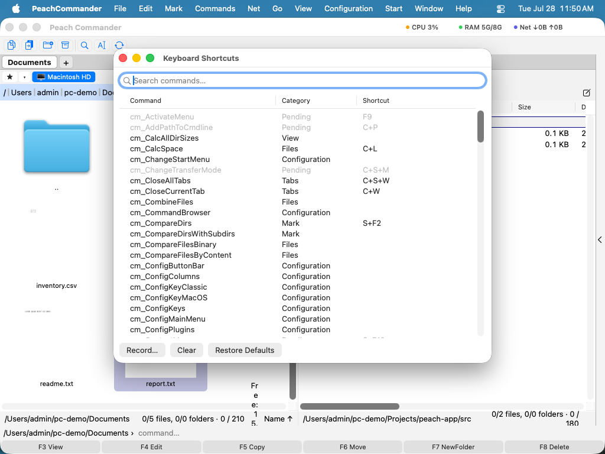

Tastatură și comenzi rapide
Peach Commander este construit pentru a fi condus de la tastatură. Vine cu două scheme de comenzi rapide gata făcute și vă permite să reasignați orice comandă tastelor pe care le preferați. Dacă veniți de la un manager de fișiere clasic cu două panouri, puteți păstra tastele pe care le știți deja; dacă preferați să folosiți combinații Mac familiare, comutați la schema macOS cu un clic. Un navigator de comenzi cu căutare vă permite să descoperiți tot ce poate face aplicația și să rulați orice comandă după nume.
Comutarea schemelor de tastatură
- Deschideți meniul Configurare.
- Alegeți Schemă de tastatură, apoi alegeți una: - TC Classic (implicită) păstrează tastele tradiționale, cu combinații bazate pe Ctrl precum Ctrl+R pentru a reîmprospăta un panou. - macOS Native mapează aceleași acțiuni pe taste Mac familiare unde are sens, de exemplu Cmd+C pentru a copia fișiere și Cmd+F pentru a căuta.
- O bifă arată schema activă. Modificarea intră în vigoare imediat în meniuri și în bara de comenzi rapide.
Personalizarea comenzilor rapide
- Alegeți Configurare > Comenzi rapide de tastatură….
- Găsiți o comandă folosind câmpul de căutare, apoi selectați rândul ei.
- Faceți clic pe Înregistrează… și apăsați combinația de taste dorită. Este asignată imediat.
- Dacă acea combinație era deja folosită de o altă comandă, un anunț vă spune de la ce comandă a fost luată.
- Folosiți Șterge pentru a elimina comanda rapidă a unei comenzi, sau Restaurează valorile implicite pentru a renunța la toate modificările dvs. și a reveni la tastele originale ale schemei.

(Figura: căutați o comandă, apoi folosiți Înregistrează, Șterge sau Restaurează valorile implicite pentru a-i schimba comanda rapidă.)Parcurgerea tuturor comenzilor
- Alegeți Configurare > Navigator de comenzi….
- Tastați în câmpul de căutare pentru a filtra după nume, categorie sau descriere.
- Faceți dublu clic pe o comandă, sau selectați-o și faceți clic pe Rulează, pentru a o executa pe panoul activ.
 (Figura: fiecare comandă într-o singură listă cu căutare, cu o scurtă descriere a fiecăreia.)
(Figura: fiecare comandă într-o singură listă cu căutare, cu o scurtă descriere a fiecăreia.)
Comenzi rapide
| Acțiune | Cale de meniu |
|---|---|
| Alege schema clasică | Configurare > Schemă de tastatură > TC Classic |
| Alege schema Mac | Configurare > Schemă de tastatură > macOS Native |
| Editează comenzile rapide | Configurare > Comenzi rapide de tastatură… |
| Parcurge toate comenzile | Configurare > Navigator de comenzi… |
| Reîmprospătează panoul activ | F2 (de asemenea Ctrl+R) |
Note
- Comenzile rapide personalizate sunt salvate automat și suprapuse peste schema activă. Comutarea schemelor păstrează suprascrierile personale.
- Comenzile care nu sunt disponibile în contextul curent apar estompate atât în editorul de comenzi rapide, cât și în navigatorul de comenzi.
- Pentru a folosi tastele funcționale (F1–F12) direct, activați Folosește tastele F1, F2 etc. ca taste funcționale standard în Setări de sistem > Tastatură. Altfel, țineți apăsată tasta Fn împreună cu tasta funcțională.